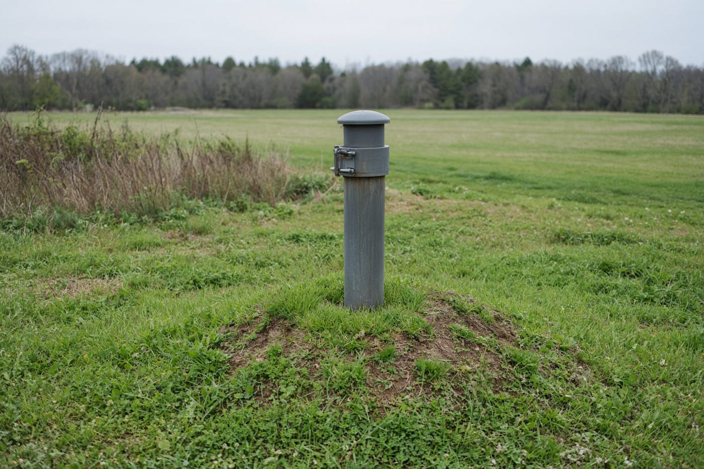
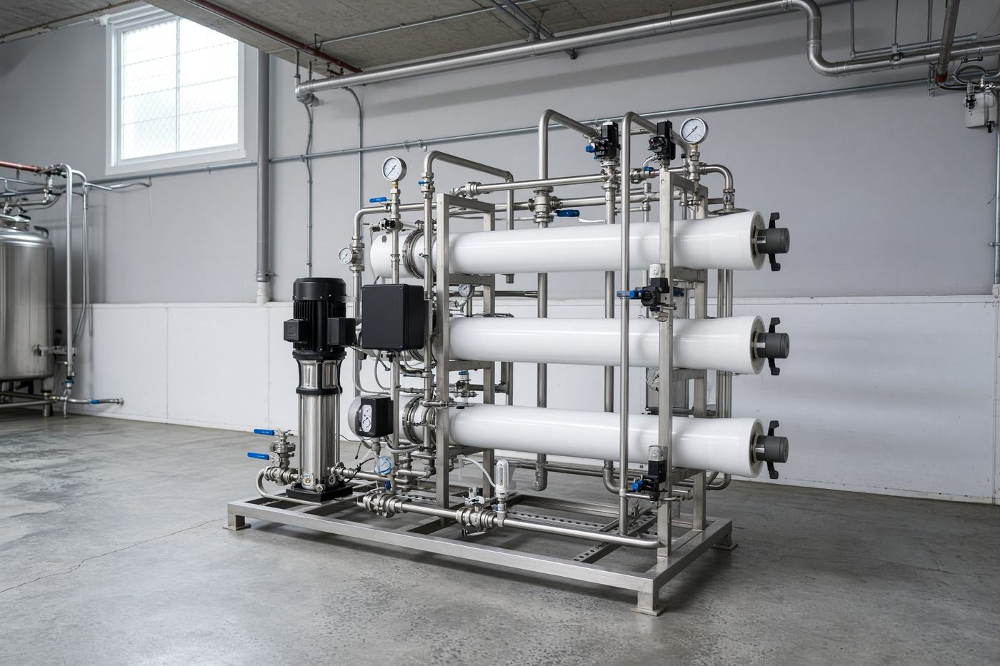
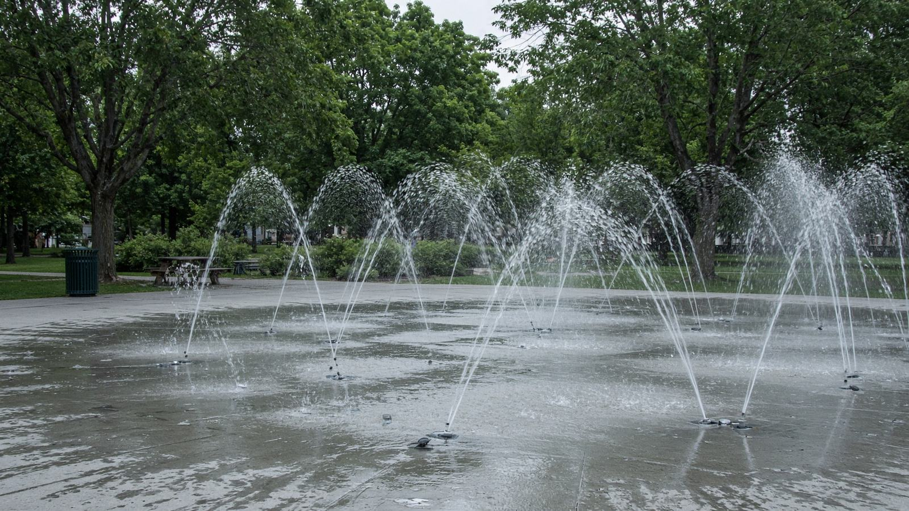
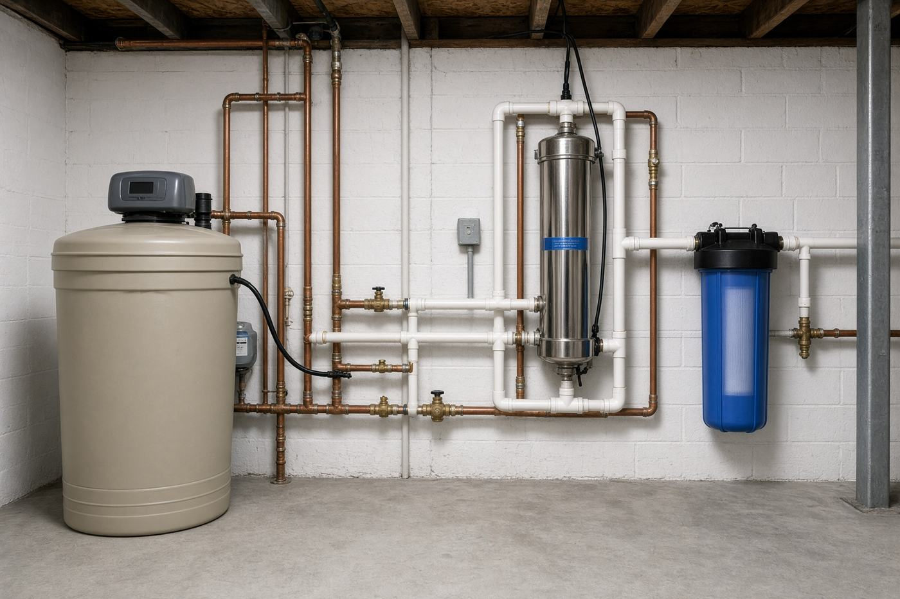

On city water
The usual worries are chlorine, hardness, metals and chemicals. A softener with chlorine removal, a whole-house carbon filter, or reverse osmosis at the kitchen tap covers most Burlington and Oakville houses.
Burlington · Halton, Hamilton & the west GTA · since 2000
Water treatment & well pumps
Softeners, ultraviolet, reverse osmosis, iron and sulphur filters, bottleless coolers and pumps. Mike Nelson has installed and looked after them from Burlington since 2000.
The usual worries are chlorine, hardness, metals and chemicals. A softener with chlorine removal, a whole-house carbon filter, or reverse osmosis at the kitchen tap covers most Burlington and Oakville houses.
Hardness, iron, sulphur, nitrates and bacteria show up together. The pump, the recovery rate and the treatment have to agree with each other. That is the work Crystalflow was built around.
About
Crystalflow is one person you can actually reach — Mike Nelson — with the licences to work on the well and the equipment that makes the water drinkable.

Crystalflow is based in Burlington, Ontario and was established in 2000. The company is owned and operated by Mike Nelson. The goal has always been quality workmanship and products at reasonable prices.
We specialize in municipal and well water, for houses and for commercial buildings. Years of working on wells and the equipment that sits on them means a treatment system is sized to the pump and the well, not picked from a catalogue.
Besides new systems, Crystalflow services older pumps, softeners, filters, reverse osmosis and ultraviolet units from many manufacturers. Replacement ultraviolet bulbs and cartridge filters are stocked. Recreational water recirculation systems are engineered and installed to meet, and usually exceed, local health department rules.
Treatment
Every product page from the current site is here. Open a row for the full detail.
Soft water is easier on skin, hair, soap and fixtures. Hard water keeps soap from lathering and rinsing, and leaves a film that holds dirt and bacteria. Hair goes limp, colour does not take evenly, and you use more soap than you need. Softened water undoes that.
Excalibur Chlor-a-Soft softens the water and removes chlorine in the same unit — the usual choice on city water that is both hard and chlorinated.
Removes clear-water iron and softens. Program it once. After that, the only supply you keep on hand is water-softener salt.
Excalibur Superior Series — a fully automatic water softener for homes that want set-and-forget regeneration.
The old Iron & Sulphur page is thin on the live site, so this section is built only from what Crystalflow actually publishes elsewhere. These filters are for well water that stains fixtures, smells of rotten egg, or carries iron.
Hardness, iron and hydrogen sulphide have to come out before nitrate, uranium, lead, arsenic, tannin and chemical filters. Those specialty units say so on their own pages.
Excalibur Premium UV systems, 8 to 13 gallons per minute at 40,000 mJ, arrive assembled. A mini-rack pairs sediment filtration — or sediment plus chemical removal — with stainless tubing, connectors and the ultraviolet chamber, on a wall bracket, with 3/4 inch or 1 inch inlet and outlet.
The Ultimate Series power source adds ultraviolet intensity detection for single-lamp Excalibur units. It is built to cut the nuisance alarms that older ballast-and-monitor combinations were known for. A two-digit display shows intensity as a percent, and remaining lamp life in months when the timer button is pressed. A discrete error code appears if the power source or detector misbehaves.
Crystalflow’s drinking-water line is built around purified water for the house, not a single pitcher. The published guidance on the site: most people should drink about 1.5 to 2.5 litres of purified water a day. Coffee, tea, cola and alcohol take more water to process than they give back.
Municipal water can look clear and still carry benzene, chlorine, chloramines, dioxane, organic matter and pesticides. Ultrafiltration also takes out dirt. It runs at low pressure, uses no electricity, and the tankless layout fits a smaller cabinet. The gallery shows an Excalibur 5-stage under a basement sink, a Novatek 4-stage 75 GPD unit, and a 7-stage with a booster pump feeding a pharmacy’s drinking water and dishwasher.
The Ultimate Series is a family of floor-standing coolers on one frame, configured for different needs: electrical or electronic controls, an LCD, and extras such as an energy saver. Hot water is part of the design, not an add-on.
City water and well water both carry dissolved chemicals. The page names vinyl chloride, carbon dioxide, carbon monoxide, TCE, PCE, THMs, chlorine, chloramines, lead, benzene, toluene, dioxin, ammonia, radon, dichloroethene, algicides, herbicides, pesticides, inks, dyes, degreasers, paints, fuel oil, solvents, mercury, boron, aluminum, fluoride, barium, nickel, selenium, strontium, zinc, uranium, and others.
The Excalibur Premium whole-home system removes chlorine, chloramines, THMs, volatile industrial chemicals, lead and other heavy metals, so bathing and cooking water is treated, not just the kitchen tap.
Filtermax is the point-of-entry chemical filter for municipal supplies, wells, lakes and rivers. It is aimed at volatile and industrial chemicals rather than hardness.
A paragraph about “handymen” and pipe registration was sitting in the chemical-removal features on the old specialty page. It does not belong to Crystalflow and is not repeated here.
A computerized valve watches nitrate level and actual water use, and regenerates only when it has to. The resin does not dump nitrates back into the water even when the bed is full.
Hardness, iron and hydrogen sulphide must be removed first.
Acidic water pinholes copper and galvanized pipe and leaves blue-green stains. The neutralizing filter raises pH from about 5.5 to neutral without adding a chemical feed.
Cloudiness from sediment, dirt and grit settles in pipes, fixtures and appliances. The automatic turbidity filter backwashes itself. There are no cartridges to stock.
High uranium in a well is a kidney and cancer concern. The Excalibur uranium filter is sized up to 20 gallons per minute.
Hardness, iron and hydrogen sulphide must be removed first.
Lead is toxic for adults and more so for children. The lead filter is chemical-free and does not discharge the captured lead to the drain during backwash.
Hardness, iron and hydrogen sulphide must be removed first.
Arsenic is a carcinogen linked to bladder, skin, kidney, liver, prostate and lung cancers. The Excalibur system is a dual automatic filter. Captured arsenic stays on the media during backwash.
Hardness, iron and hydrogen sulphide must be removed first.
Tannins come from decaying vegetation and acid rain — humic and fulvic acids that colour the water. The filter regenerates with ordinary softener salt.
Hardness, iron and hydrogen sulphide must be removed first.
Volatile and industrial chemicals show up in city water, wells, lakes and rivers. The whole-house chemical system is the automatic version of the Filtermax idea: backwashing media rather than a string of cartridges.
Hardness, iron and hydrogen sulphide must be removed first. The feature list on the old page had been overwritten with unrelated text, so model-level claims from that block are left out.
Excalibur cartridges are interchangeable with other brands. Crystalflow also sells replacement ultraviolet bulbs.
Pumps
Licensed well-contractor work: jet pumps, 4-inch submersibles, and constant-pressure systems.
One pump, three nozzles. A patent-pending quick-change nozzle and the included Allen key swap the internal nozzle between standard performance, high pressure and high flow.
The Legend 4-inch submersible uses a floating stage so the impeller can move on its own. That holds efficiency and resists wear when the well is making sand. Schaefer guarantees the pump against sand-locking for one year in abrasive wells. A registered dealer warranty can run to five years.
SCALA2 is a booster with the pump, motor, tank, sensor, drive and non-return valve in one box. It holds pressure when more than one tap is open. A water-cooled motor keeps it near the noise of a modern dishwasher — about 47 dB in typical use.
A sensor watches discharge pressure. If it falls below the setpoint, the pump speeds up. One model covers ordinary domestic boosting. It is plug-and-pump, with dry-run protection and anti-cycling.
The SQE is a submersible with the electronics in the motor. Speed changes with demand, so pressure at the tap stays put. The CU301 controller is the wall unit: set the pressure with the arrows, and it does the rest.
A stainless pressure sensor tells the CU301 what the line is doing. The controller starts, stops, speeds up or slows the pump, and talks to it over the power cable — the same idea as a home intercom. Lights show low well water and pump running. The keypad can be locked.
The pumps overview still names the Grundfos MQ. The detailed MQ page on the current site did not load, so no performance numbers are invented here. For a new house booster, the pump Crystalflow describes in full is the SCALA2, which covers the same job in one compact unit. Existing MQ pumps can still be serviced — ask when you call.
Service
Crystalflow is a Ministry of the Environment licensed well contractor. The work is sizing, repair, sales and installation — not a quote from a phone script.
Most local wells are drilled or bored. A new drilled well is cased into bedrock, with the casing above grade, a pitless adapter and a sanitary cap. Construction rules keep moving toward that, for health reasons.
Thirty years ago many drilled wells sat entirely underground: a concrete ring and lid, sometimes only a buried well seal. They are hard to find without the driller’s record. The seal is often not watertight even when it looks fine. Getting chlorine in means lifting a concrete lid and finding a vent. Pulling the pump means breaking that seal, which can take an hour.
The usual upgrade is to weld on a coupling and a matching piece of casing, and bring the well 16 to 18 inches above the ground — the gallery shows extensions of 40 cm and more, with the soil mounded so surface water runs away. A pitless adapter, a proper cap, and the pump go back in. That makes contamination less likely and the pump easier to pull. It does not make a well immune. An aquifer can be shared for miles. One bad well upstream can put bacteria into the neighbours. Treatment in the house is still the protection you control.
Bored wells stop above bedrock and take water that sand, clay and soil have filtered. They run as deep as 120 feet but are often 30 to 50. They contaminate more easily: the water’s path from rainfall is shorter, and many older tile wells are not sealed or raised, so surface water leaks between the rings. Bringing an old bored well up to current rules is difficult and expensive. An ultraviolet sterilizer in the house is the practical answer to bacteria.
A real-estate well inspection is also called a flow-rate test or a recovery test. It answers three things: is the well up to code, what would it take to get it there, and how much water does it actually make?
That last number is how a buyer knows whether they can run a sprinkler and three loads of laundry, or whether they have to wait for the well. Some lenders want the recovery rate before they will mortgage the house. Crystalflow has tested wells that keep one person comfortable and fail a family of four. A cistern and pump in that case is often over $10,000 installed.
A well that lets surface water in can carry E. coli, nitrates and fertilizer, and it can turn the water turbid enough to wreck treatment equipment. High total dissolved solids — hardness or other mineral salts — are expensive to treat and hard on appliances.
A short test that only asks whether the well runs dry in an hour will miss costly repairs. The current site mentions a sample inspection report; ask Mike for a copy when you book.
Crystalflow services existing commercial treatment systems. Clients include breweries, distilleries, cannabis facilities, nursing homes, churches, community centres, golf courses, greenhouses and RV parks.
Installation is available for anything Crystalflow sells. The water is looked at, the raw supply is analyzed, and the treatment is built to stay reliable. The gallery includes a duplex softener on a city arena ice plant, parallel 3 cubic foot filters for suspended solids and oxidized iron, a 172 gpm UV with a CAT 2000 chemical feed, and VFD-driven three-phase pumps.

A splash pad is either drain-away or recirculation. Drain-away uses city or well water once, then sends it to the sewer. Recirculation catches the water, filters it, and sends it back, with a portion of fresh water added.
Crystalflow has designed and installed splash-pad recirculation across Ontario for about ten years, including new builds and retrofits. Gallery work includes Hallett 30 UV units in parallel, Nextsand and sand filters, an ETS ultraviolet, a CAT 2000 ORP/pH controller, 15 cubic foot Nextsand filters on the loop, 5 hp Hayward pumps, and a 3-inch manifold.

Projects
Captions are the real jobs listed on Crystalflow’s gallery. The photographs are stand-ins until the original job photos are copied into this folder.

Reviews
“While it doesn't seem that long, Mike at Crystalflow has been taking care of the extremely unusual water systems in our 175 year old heritage home in North Burlington for almost 10 years. This has included both installation of several pieces of new equipment and ongoing maintenance. After a poor experience with a previous company, I thank my lucky stars I found Crystalflow. Mike is knowledgeable, efficient and patient with our ineptitude. His prices are extremely fair and his customer service the best I have ever experienced in any supplier. It doesn't hurt that he is also a very nice person! If you need a personal reference please ask Mike to put you in touch with me — he will know from this review who I am.”
Mike at Crystalflow first helped us at our rural Ancaster property by upgrading our water well to current standards. He then installed a UV disinfection and filtration system. When Mike mentioned he also installed geothermal heating and cooling systems we decided to go ahead with that as well to take advantage of the government’s ecoENERGY retrofit grant program. We found him to be very friendly, knowledgeable, quick and efficient. What drew us to him initially was his competitive quote, but from now on I would rather not deal with anyone else. Now we are building a new much larger home on our property and Mike will certainly be helping us with our heating, cooling and water system needs there as well.
My wife and I had a brand new water treatment system put in a couple of years back by Mike from Crystalflow. We found that sometimes our water would taste like chlorine and other chemicals. Mike was very professional and was able to answer all of our questions. We would recommend the folks at Crystalflow for all of their water treatment needs.
I’ve used Crystalflow’s services for years, and the systems they installed are all running great. Mike did a great job on the install, working around other renovations that were in progress. Subsequent service calls have always been on time and hassle free. I highly recommend Crystalflow for friendly, knowledgeable, and dependable service.
I have used other water treatment companies, but after using Crystalflow, I will never use anyone else. The quality of service is exceptional. Mike truly goes above and beyond. He is always quick to respond and happy to answer questions over the phone. His rates are very competitive, and combined with the level of service, they are a great deal.
Mike from Crystalflow was professional, responsive and exceeded expectations from quote to completion. The project was completed on time, on budget and hassle free. We will be working with Crystalflow again and would recommend them to family and friends.
We've used Mike for over 15 years for regular maintenance and replacement of parts on the water system at our rural residence. He's always provided stellar service. He returns calls quickly, shows up promptly, and performs the work required.
Complete satisfaction from the first quote to the install. The quote was accurate to the penny. Mike delivered what he said he would, and went past it. He arrived on time with the materials, stayed until the job was done, and came back for a minor hiccup at no extra charge. He showed us how the new systems work and how to maintain them. After two long days — a well extension and a new filtration and pump system — the property looked as it did before. Not a shred of garbage was left. We will use Crystalflow to maintain the systems.
Mike from Crystalflow has been coming to our home for at least 12 years. He set up our water softener and ultraviolet system, manages our well and cistern, and deals with the rural water issues. He is prompt, reliable, friendly, and runs an excellent business. He calls back usually within hours and comes when he says he will, or calls to reschedule.
Quote
Same fields as the quote form on the current site. It still submits to Crystalflow’s Jotform. There is no separate booking calendar — the old “Schedule an appointment” link pointed at a missing anchor.
Concentrated service area: Burlington, Oakville, Milton, Stoney Creek, Ancaster, Hamilton. Work extends through the GTA and southern Ontario.